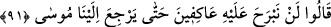
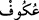

yapmamış, aksine hakkı haykırmış, insanları kendisine tâbi olmaya çağırmış, başkasına
uymalarına mâni olmaya çalışmıştır. Eğer (onların iddia ettikleri gibi kendilerinden
başka) Muhammed ümmeti hatâ içinde olsaydı, Hz. Ali’nin Hârun (a.s.)’ın yaptığını
yapması, korkmadan ve hiç takıyye yapmadan minbere çıkıp insanlara: “Bana uyun,
emrine itâat edin” demesi gerekirdi. Böyle demediğine göre Muhammed ümmetinin
doğru yol üzerinde olduğunu anlıyoruz. Hz. Ali’nin kendisinin ülûhiyetini iddiâ eden
zındıkları bâtıl üzere oldukları için yaktırdığı da sâbittir.
91. Onlar: “Biz, Mûsâ aramıza dönünceye kadar buna tapmaktan asla
vazgeçmeyeceğiz!” dediler.
“Onlar:” İsrâiloğulları Hârun (a.s.)’a cevâben: “Biz, Mûsâ bize dönünceye kadar
buna” buzağıya “tapmaktan asla vazgeçmeyeceğiz!” dediler.”
Râğıb der ki: “ bir şeye yönelmek ve saygı göstererek ona bağlanmaktır.
Tefsîr-i Kebîr’de şöyle der: “Allâh’ın rahmeti İsrailoğulları’nı Fir’avn’un
âfetlerinden kurtarmıştır. Sonra onlar câhillikleri sebebiyle buna Sâmirî’yi taklid ederek
karşılık verdiler ve Hz. Hârun’a: “Biz, Mûsâ bize dönünceye kadar buna” buzağıya
“tapmaktan asla vazgeçmeyeceğiz!” dediler. Yâni Hârun (a.s.)’a şöyle îtiraz ettiler:
Biz senin, delillerini kabul etmeyiz. Ancak Mûsâ’nın bize getireceği delillere inanırız,
dediler.
el-İrşâd’da şöyle der: Onlar, buzağıya tapmaktan vazgeçme husûsunda, Mûsâ (a.s.)’ın
Tûr-i sinâ’dan dönüşünü bekleyeceklerini söylediler. Ancak bu, Hz. Mûsâ geldiğinde
onu (buzağıyı) tamamen terk edecekleri anlamına da gelmiyordu. Aksine bunu bir
gerekçe arama ve işi ileriye atma yollu söylüyorlardı. Bu sözün altında Mûsâ (a.s.)’ın
Sâmirî’nin karşısına çıkacak açık bir delille dönemeyeceği desîsesini saklıyorlardı.
Rivâyete göre onlar bu sözü söyleyince Hârun (a.s.) buzağıya tapmayan on iki bin
kişiyle onlardan ayrıldı. Mûsâ (a.s.) döndüğünde buzağıya tapanların, onun etrafında
raks ederek çıkardıkları sesi işitti. Kendisi ile birlikte Tûr-i Sinâ’dan dönen yetmiş
kişiye: “İşte bu, fitnenin sesidir.” dedi. Onlara söyleyeceklerini söyledi ve verdikleri
cevabı dinledi.
et-Te’vîlâtü’n-Necmiyye’de der ki: “İsrailoğulları’ndan buzağıya tapınanlar, Hz.
Hârun’un sözünü dinlemediler. Çünkü onlar gerçek anlamda işitmekten uzaktılar. Onun
için: “Mûsâ bize dönünceye kadar buna tapmaktan asla vazgeçmeyeceğiz!” dediler.
Burada işâret vardır ki mürîd, kendisini Hakk’a vâsıl eden kâmil bir şeyhin hizmetine
iştiyakla tâlip olursa ve emrettiklerini tutmak, yasakladıklarından sakınmak niyeti içinde
sâdık bir irâde ile sohbetine devam ederse; şeyhinin kendisini irşâd için olan
tasarruflarını kabul ederse onun velâyet nuru ile işitici ve görücü olur. Şeyhinin velâyet